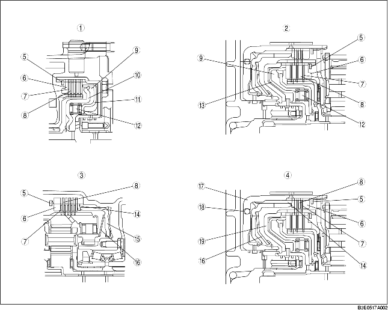

• La estructura de base es la que se muestra en la figura siguiente. En la figura A, el fluido es en los discos del embrague (discos conductores y conducidos) y no se transmite potencia por causa del deslizamiento del fluido en cada disco. La figura B muestra la condición del embrague cuando la presión hidráulica actúa sobre el pistón; los discos conductores y conducidos se empujan para transmitir la velocidad de rotación al tambor de embrague al cubo. Cuando la presión hidráulica del pistón se descarga, los embragues se separan por causa del resorte de retorno y vuelven a la condición indicada en la figura A.
.
• Los discos usado para el embrague de marcha atrás y el freno de marcha baja y marcha atrás reducen el choque causado por el acoplamiento repentino del embrague. La bola de retención del pistón integrada en el tambor de freno 2-4 (embrague de marcha atrás) descarga el ATF sólo en punto muerto para evitar que la presión hidráulica aumente hasta acoplar los embragues por causa del ATF residuo. En el embrague de marcha adelante y 3-4, la cámara de equilibrado centrífugo está instalada frente a la cámara general del embrague. La cámara de equilibrado centrífugo está siempre llena de ATF, gracias a un conducto de lubricación especial del eje de turbina.

.